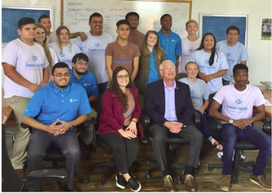
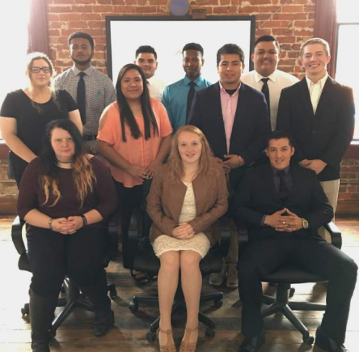
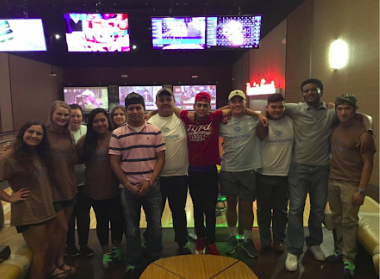
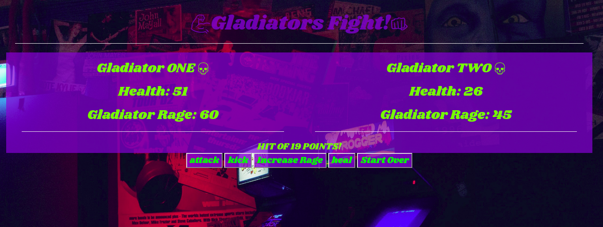
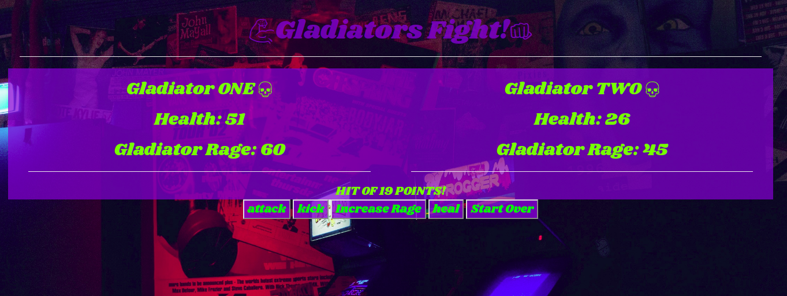
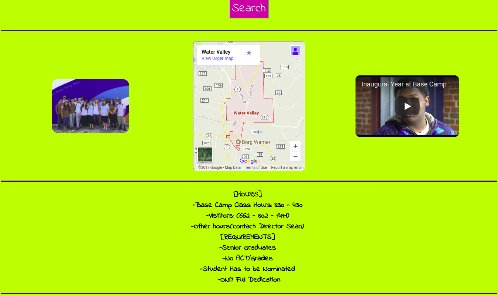
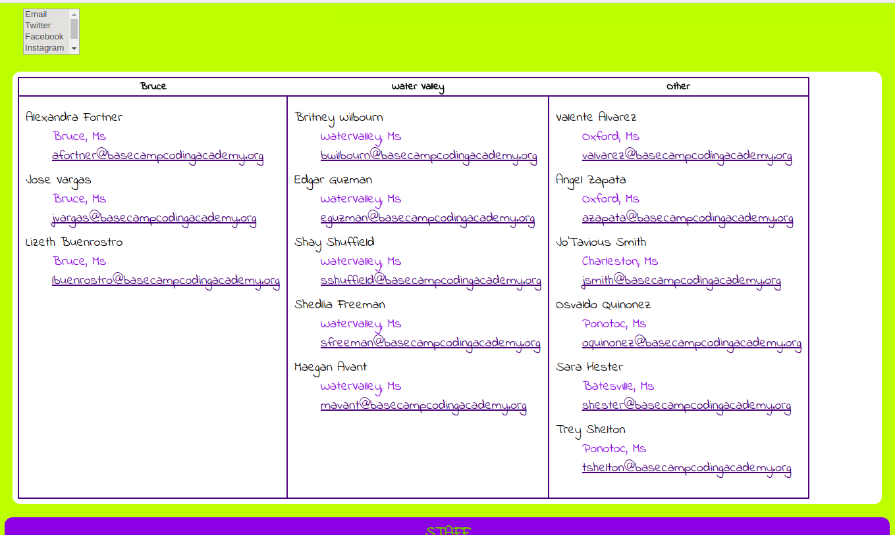
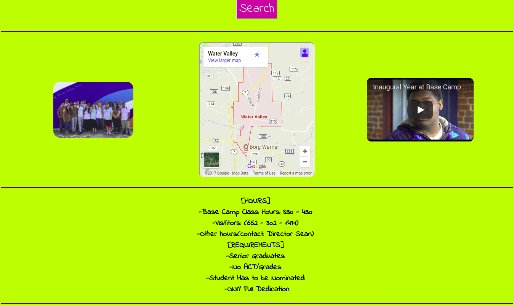
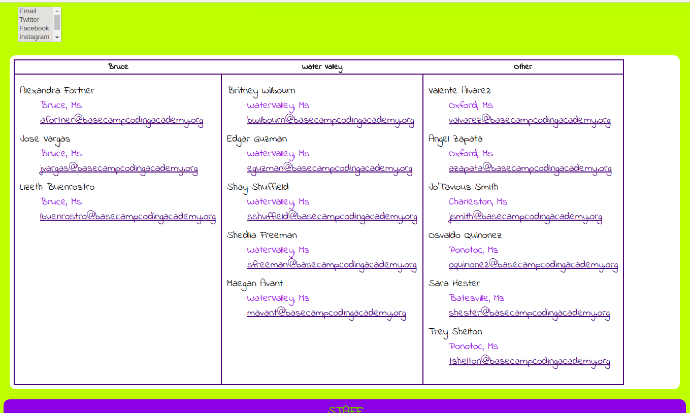

LIZETH BUENROSTRO
My name is Lizeth Buenrostro, and I'm currently enrolled in Base Camp Coding Academy, learning Computer programming languages. I grew up in Bruce, Ms mostly all my life, coming from a family of four. I personally think Base Camp is a lifetime opportunity for fresh high School Seniors. The reason I'm a software developer is that I'm always fascinated on how anyone can communicate with a computer and how much it takes to do so, in the process I learn that, "Tech-Careers are jobs that will be hard to disappear over time, Going into this field work, has great promises, but can only be achieve by demonstrating a strong heart and mind that will later make me become a fantastic software developer that works hard and has dedication."
--2018 GRADUATION--
"Life doesn’t require that we be the best, only that we try our best. —H. Jackson Brown Jr."
  
Before graduating from Bruce High School, I was excited to start a new phase as a senior, however, my family had a bad economic breakdown, therefore Base Camp has been the greatest thing that has happened to me. Base Camp has been like a roller coaster since day one. Meeting knew people making contacts entering a work field full of responsibility but enjoyable times. Base Camp gave "us" as students the chance to be who we are and show our talents. I personally would encourage others to go out there and explore new things, meet people, make connections, because after all those are the people that one day may help. What I appreciate about Base Camp is their way to make anyone feel welcome and encorage their students to achieve their goals. Since I entered Base Camp I had the chance to meet so many amazing people like FNC/CoreLogic staff, RENASANT Bank sponsors, and Cspire employees that were BCCA graduates from 2017 and so many more. A few months into BCCA, and I'm still excited for what's ahead to learn and achieve; therefore I still don't know exactly what I will do after graduation life has shown me, that everything can change in a second. But I do aspire for a better future where a can have a wonderful working place.
--PROJECTS--
Java Gas Pump
A Gas pump project using Java, Customer Interface to purchase Regular, Mid-Grade, Premium Gas. This project also contains an Administration path were only the manager can see the Toal sales. In Java the main use is, object-oriented programming, which is compose of a class, an extensible program-code-template for creating objects, providing initial values for state (member variables) and implementations of behavior (member functions or methods).
Django Instagram Project(Javascript, Html/CSS)(Frameworks: jQuery, Bootstrap, FontAwsome, ((PIL Library)))
Created a replica of Instagram, allows Image Uploads and apply built-in PIL Filters. The requirement was to Utilize Python Imaging Library, PIL to make own custom filters that can be applied to any Upload images. The Project is focused in using the Server, a back-end support , which helps store all Image Uploads and PIL Filters.
Front-End-Project WEBSITE @rawgit(click here to experience the web-page)
Front-End-Project @GitHub
Product Description Online shopping is convenient and hassle free. For this project I use Beat Headphone Products, the web consists of four inventory items for sale. Application Requirements: The requirements for this application was to use fundamental technologies and frameworks such as Html, Css, Javascript, jQuery, Bootstrap.This project is a single session web-experience.
Gas_Pump @GitHub
Gas_Pump(click the video below)

Gladiator_Class @GitHub
Gladiator_Fight(click the video below)

Rental_Store_LizethBuenrostro @GitHub
Rental Agency View(click the video below)

--MODIFIED GAMES--
A graphical user interface (GUI) is a human-computer interface (a way for humans to interact with computers) that uses windows, icons and menus and which can be manipulated by a mouse (and often to a limited extent by a keyboard as well).
With this information BCCA students had to modify a GUI-Tetris game by fixing or finishing some of the code
The player is represented as a snake, which grows if it eats (x). The goal of the game is to eat as many as possible without colliding into yourself. This is very easy in the early phase of the game, but is increasingly more difficult as the length of the snake grows.
This game was all written in python, We define a class Player, which holds the player's position on the screen and the speed by which it moves. In addition, we define the actions a Player instance, can do (movements).
--Websites--
Gladiator_JS_LizethBuenrostro @GitHub
 


I used a new package manager called Yarn, this package has a set of existing workflows while operating faster, more securely, and more reliably. For this project I coded in Javascript, however, I stared with Jinja, and jQuery. In Javascript, functions have to be used where they all connect and work together, along with html and css(optional). I made different types of "attack" buttons that would react when click by users. Also, I use html to design and build the website.
 



Html is the set of markup symbols or codes inserted in a file intended for display on a World Wide Web browser page. The markup tells the Web browser how to display a Web page's words and images for the user. The first day of html being presented to the class, I made a similar Base Camp Website using just Html and Css. I used most of the book requirements on how to insert a list, links, images, tables, flash/video&audio, color, ect.
--CONTACT Me--
Contact Info: Gladly open to any questions
lbuenrostro@basecampcodingacademy.org
lbuenrostro66@gmail.com
_Linked: Lizeth Buenrostro Profile